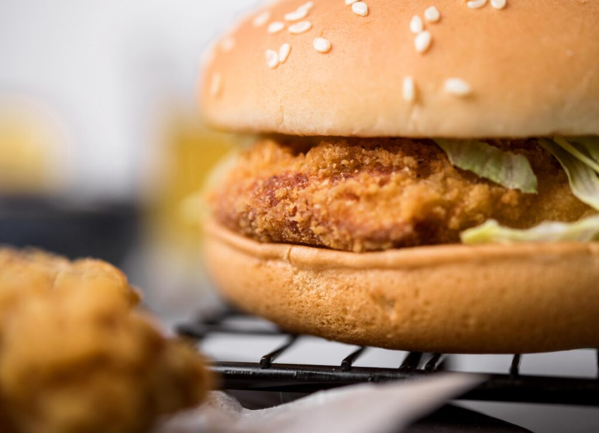

Ingredientes
Para o peixe:
- 2 filés de peixe branco (merluza, tilápia ou pescada funcionam bem)
- 1 ovo
- ½ xícara de farinha de trigo
- ½ xícara de farinha de rosca (ou panko para mais crocância)
- Sal e pimenta a gosto
- ½ colher de chá de páprica doce (opcional)
- Óleo para fritar
Para o molho:
- 3 colheres de sopa de maionese
- 1 colher de chá de suco de limão
- 1 colher de chá de mostarda amarela
- 1 colher de chá de picles picado (ou pepino em conserva bem picadinho)
Para montar:
- 2 pães de hambúrguer
- 2 fatias de queijo cheddar ou queijo prato
- Alface picada (opcional)
Modo de Preparo:
-
Preparar o peixe:
- Tempere os filés com sal, pimenta e limão.
- Passe o filé primeiro na farinha de trigo, depois no ovo batido e, por último, na farinha de rosca/panko.
- Frite em óleo quente até dourar (ou asse no forno a 200 °C por cerca de 20 min para versão mais leve).
-
Molho especial:
- Misture maionese, mostarda, suco de limão e picles picado.
-
Montagem:
- Aqueça levemente o pão.
- Coloque o filé de peixe frito/assado sobre a base do pão.
- Adicione o queijo cheddar por cima (se quiser pode derreter rapidamente).
- Espalhe o molho especial.
- Finalize com alface (opcional) e feche com a outra parte do pão.
E está pronto o seu McFish caseiro: crocante por fora, macio por dentro e com aquele sabor clássico.
